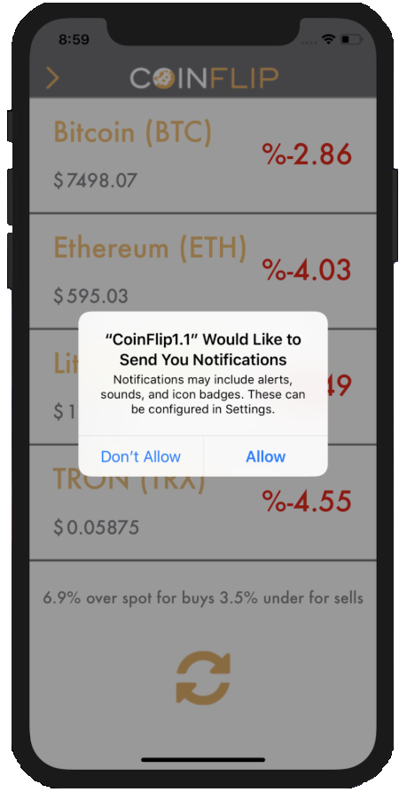
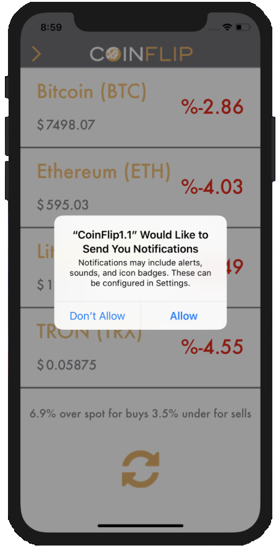
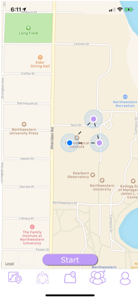
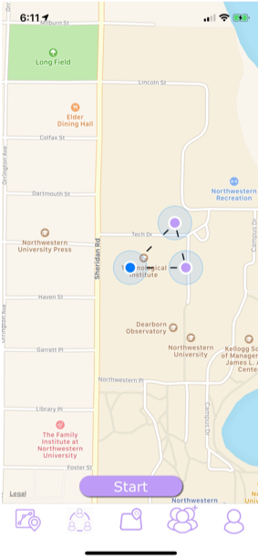

Notable Projects:
Project: This website
Skills: HTML, CSS, Javascript
Description: I made this website to give a more in depth view of me from projects to interests. I thought this was the best way to show everything I have worked on to this date while at the same time improving and working on a skill, web development.
Project: The Jellyfish
Skills: User Testing, Arduino, Rapid Prototyping
Description: During my freshman year at Northwestern I took a class called Design Thinking & Communication. We were tasked with a problem from our client, The Park School, and in small teams sought to find a solution. After various prototypes and user testing we decided on our final product, The Jellyfish. The Jellyfish was a musical instrument that used captive touch sensors attached to LED tubes to play music. From our user testing we saw that many of the students enjoyed grabbing objects, but were also very rough so our design had to be accessible and durable. This led to the LED tubes that provided sensory feedback while also being able to withstand twisting and tugging. On top of this we added a compartment at the back for interchangeable aromas as another sensory aspect of our design. To achieve all this functionality we programmed an Arduino that was connected to two speakers fastened below the metal grates.


Project: CoinFlip IOS App
Skills: Swift, User Testing, JSON, UI Design
Description: In another section of Design Thinking & Communication we were paired with a local start-up CoinFlip that had Bitcoin ATMs throughout the US. CoinFlip asked our group to create an application that would improve the user experience in using their machines. After interviewing many of their customers and observing how people interacted with the machines we discovered that the main obstacle for users was finding the machines as the website was difficult to operate on mobile. We used Swift and Mapkit to achieve a map that had all the atm locations and could give you directions to a chosen one. After interviewing users about our initial prototype we added functionality as many said they would not download it simply for mapping. We added live price tracking feature that included market data on the crypto currencies offered along with a page that kept users update on deals and new machines.
 

Project: Tagalong
Skills: React Native, Github, UI Design
Description: I joined a club IEEE at Northwestern and became a part of a small team with the sole task of designing an application in React Native. After a few meetings with our mentors I suggested the idea that would become Tagalong. We wanted to create an application that helped promote safety on campus through connectivity. Our final design had three functions. The first was the SafeWalk feature which allowed the users friends to track their progress on their walk home. The second feature, GeoFence, was a feature focused on parents as they could map off an area and be notified if the person they were following had left the area. Our third feature, GroupWeb, allowed the user to select friends to add to a web and if any member left the group then they would all be notified. We achieved all this functionality through react native, Push Notifcations, and Mapkits. This paired with databases to store the user data to allow for them to make an account. We presented our final product at the IEEE Project Showcase and were awarded Best Undergraduate Project.
-

-


-
 

Project: Crowdd
Skills: Swift, Firebase
Description: Tagalong ran into some issues in the later stages of development and React Native restricted our ability to constantly check user location so we were forced with the tough decision of whether or not to Switch to developing in swift. After a lot of thinking I decided to start the project over in Swift, but with a new and more focused direction. I focused simply on the GroupWeb feature as this feature was unique and the bulk of our design. I am currently still developing Crowdd in my free time.
Project: Turtle Takeover
Skills: C#, Design
Description: Northwestern hosts a musical festival at the end of the year and this year reached out to the students to offer the opportunity to make art pieces for the event. I worked with my friend Sasha to build a multimedia art piece. She painted a mural of an animal arcade while I built an arcade machine and created an arcade game. We worked together over a couple of months to build, paint, and set up the art piece for the festival.

Project: Dino Dash
Skills: C#
Description: While studying in Copenhagen I took a game development class in which we developed a 2D game as one of our projects. In a team of 4 we developed an endless runner mobile application called Dino Dash. We wanted to create a unique mechanic that defined our game and after brainstorming we decided to have the player make waves across the screen instead of the standard tap to jump functionality. After various play testing sessions we had a finalized version to turn in for class. We wanted to keep working on the game and release it on the app store so we posted a video of our game on reddit to get feedback from the community on how to improve our game. We had a lot of responses and made a lot of changes to our game and are still improving it before we publish it.

Project: Friendsy
Skills: HTML, CSS, Javascript, Github
Description: During a Human Computer Interaction course at Northwestern we were tasked with creating the interface for an application that would improve peoples daily lives. Our team decided to create an application that allowed you keep track of all your long distance relationships and schedule time for your loved ones. We followed the design principles we learned in class to create prototypes and then conducted user testing. After a couple iterations we decided to add incentives to achieve the users goals of connection. All of this led to our final design decisions and help create the interface we built.